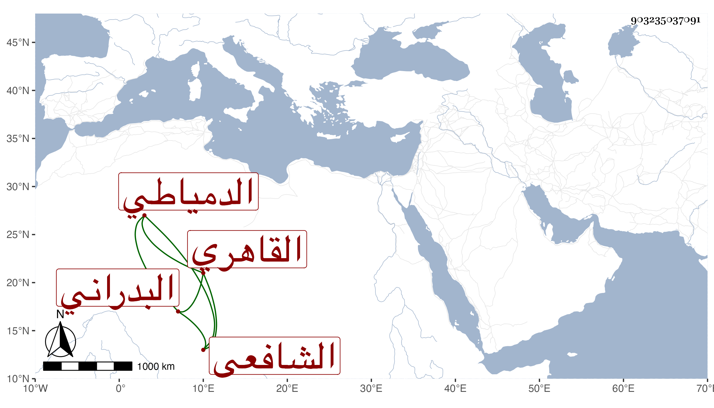

0902Sakhawi.DawLamic.ITO20230111-ara1.EIS1600.903235037091
Biography ID: 903235037091
568
محمد بن حسن بن علي بن عبد العزيز بن عبد الرحمن بن عفاة بمهملة مضمومة فيما قيل الجمال أبو الطاهر البدراني ثم الدمياطي القاهري نزيل الحسينية الشافعي والد أبي الخير محمد الآتي . ولد في ليلة الجمعة ثالث عشري شوال سنة سبع وثمانين وسبعمائة بمنية بدران جوار المنزلة ونشأ فحفظ القرآن والعمدة والحاوي وألفية ابن ملك وغيرها ، وعرض على جماعة واشتغل بالفقه والعربية والحديث ولازم شيخنا حتى أخذ عنه شرح النخبة له ووصفه بالشيخ الفاضل البارع المتقن الأوحد وأذن له في إفادتها ، وجود الخط عند ابن الصائغ وأتقنه ونسخ به كثيرا لنفسه وغيره ومن تصانيف شيخنا وغيره ، وطلب وقتا ودار على الشيوخ وضبط الأسماء وكتب الطباق ورأيت له ثبتا في مجلد سمع فيه على ابن الجزري والنور الفوي والولي العراقي والشهاب الواسطي والزين القمني في آخرين ، وكذا سمع على الكمال بن خير والتقي الفاسي ، ومما قرأه عليه المتباينات له بل والشرف بن الكويك والجمال عبد الله الحنبلي والعز بن جماعة والشمس البيجوري ، وأجاز له عائشة ابنة ابن عبد الهادي وعبد القادر بن إبراهيم الأرموي والجمال بن الشرائحي وآخرون ، وما أشك أنه أخذ عن أقدم من هؤلاء ، وحدث سمع منه الفضلاء وأسمع الزين رضوان العقبي ولده عليه ، وكان أحد صوفية سعيد السعداء وقارئ الحديث بجامع الحاكم في وقف المزي لكونه كان فقيه ولد مملوك المزي وكذا أقرأ أولاد التلاوي ، وكان فاضلا فصيحا في قراءة الحديث وفي الخطابة أيضا خطب بجامع الحاكم شريكا للصدر ابن روق ثم لولده وأم بجامع كمال وحج . مات في العشرين من رمضان سنة سبع وثلاثين ودفن بحوش صوفية سعيد السعداء رحمه الله وإيانا .
